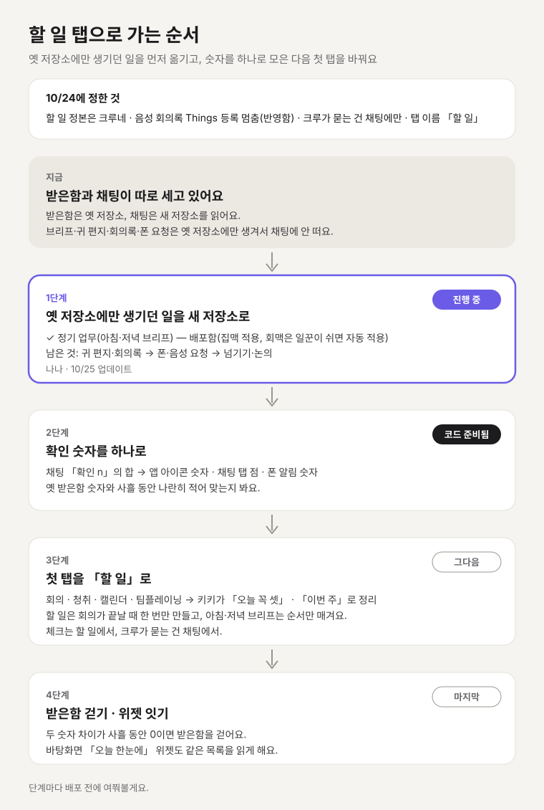

옛 저장소에만 생기던 일을 먼저 옮기고 첫 탭은 마지막에 바꿔요

같은 일을 두 탭이 따로 세고 있어요
10/24 v5 배포로 채팅 목록에 「확인 n」 배지, 펼친 하위 줄, 「보고 n건 모두 확인」, 집맥·회맥 알림 행이 들어왔어요. 받은함에도 같은 일이 남아 있어요.
| 겹치는 것 | 받은함 | 채팅 |
|---|---|---|
| 확인할 것 숫자 | 확인 필요 타일·탭 점·앱 아이콘 숫자 | 크루 행 「확인 n」 배지 |
| 보고 거르기 | 끝남·보고·진행 중 타일, 크루 칩 | 크루 방·업무 대화 |
| 집맥·회맥 알림 | 「알림」 칩 | 알림 행 |
게다가 받은함은 옛 저장소를 채팅은 새 저장소를 읽어서 두 숫자가 어긋날 수 있어요. 반대로 아침·저녁 브리프는 키키 방 말풍선으로만 와서, 오늘 할 일 목록이 머물 자리가 없어요. 위로 밀리면 끝이에요.
「오늘 꼭 셋」부터 보여 줘요(추천 A안)
위에서 아래로 이렇게 놓아요.
- 날짜 머리와 일정 알약: 지금 받은함 머리를 그대로 가져와요.
- 키키 한 줄: 오늘 제일 큰 일 하나.
- 오늘 꼭: 많아야 셋. 줄마다 체크칸, 기한, 출처 칩(회의·청취·캘린더·팀플·크루).
- 이번 주: 마감이 이번 주거나 남이 3일 넘게 내 답을 기다리는 일.
- 새로 들은 것: 브리프 사이에 회의록 배송이나 청취가 닫히며 들어온 할 일. 정리 전이라 회색으로 접어 둬요.
- 나중에: 지금 받은함의 백로그를 옮겨 와요.
줄을 누르면 출처 원문(회의록·들은 대화·크루 업무)으로 가요. 길게 누르면 「크루에게 맡기기·내일로·빼기」가 떠요. 맡기면 그 크루 방에 새 업무가 생기고, 할 일에는 「나나가 하는 중」으로 남아요.
B안은 출처별 묶음(회의 3·들은 대화 2·캘린더 2)이에요. 어디서 온 일인지는 잘 보이지만 무엇부터 할지가 흐려져서 뺐어요.
할 일은 한 번만 만들고 브리프는 순서만 매겨요
브리프가 목록을 통째로 다시 짜면 체크한 줄이 말만 바뀌어 되살아나요. 그래서 이렇게 나눠요.
- 만드는 때: 회의록 배송·청취 묶음·Tiro 요약이 닫힐 때, 「할 일」 칸의 줄을 한 번만 할 일로 만들어요. 같은 회의를 배송·Tiro·청취가 함께 들여오면 하나만 남겨요.
- 순서 매기는 때: 평일 08:00·20:00 키키 브리프가 「오늘 꼭 셋」과 「이번 주」를 골라요. 브리프 글은 이 목록에서 찍어 내요. 글과 목록이 따로 놀지 않게요.
- 다시 짜기: 탭 맨 아래 「다시 정리」로 순서만 다시 매겨요.
- 저장: 새 저장소에 할 일 목록 하나만 둬서 무료 읽기 한도를 건드리지 않아요.
- 크루에게 맡긴 줄: 할 일 체크칸은 두 번째 완료 단추가 되지 않아요. 채팅에서 샐리가 그 업무를 「확인」하면 할 일 줄이 따라 닫히는 한 방향만 둬요(완료는 샐리 확인 단추로만, 10/9 결정).
- 위젯: 「오늘 한눈에」 위젯도 같은 목록을 읽게 하는데, 길을 새로 내야 해서 마지막에 해요.
첫판은 「오늘 꼭 셋 + 이번 주 + 그 밖 n건」이에요. 시안 A의 「새로 들은 것」은 중복이 자리 잡힌 다음 단계예요.
알림까지 맡고 받은함은 옛 저장소를 다 옮긴 뒤 걷어요
옛 저장소를 읽는 곳이 세 군데 남아 있어서, 받은함만 걷으면 숫자가 따로 놀아요.
| 옛 저장소를 읽는 곳 | 옮길 곳 |
|---|---|
| 폰 알림에 실리는 확인 숫자(일꾼이 셈) | 채팅 「확인 n」 합계 |
| 앱 아이콘 숫자(받은함 화면이 셈) | 같은 합계 |
| 바탕화면 「오늘 한눈에」 위젯 | 할 일 목록 + 채팅 합계 |
10/24 구현하면서 더 찾았어요. 옛 저장소에만 생기는 일이 남아 있어요. 정기 업무(아침·저녁 브리프 포함), 키키 귀 편지, 회의록, 폰·음성 요청, 넘기기·논의, Mac 알림·허용 요청이에요. 이것들은 지금 채팅 목록에 안 떠서 숫자만 옮기면 브리프가 숫자에서 빠져요. 그래서 이 생산자들을 새 저장소로 옮기는 게 숫자 바꾸기보다 먼저예요.
걷는 조건은 세 곳을 옮기고, 사흘 동안 옛 확인 필요 건수와 채팅 합계의 차이가 0인 거예요. 그 밖에 옮길 것이에요.
- 탭 점 → 채팅 탭으로.
- 폰 알림과 「크루 보고 묶음」(12·18시)을 누르면 → 받은함 대신 채팅 목록이나 그 크루 방으로.
- 일괄 확인 → 채팅 하위 줄의 「모두 확인」이 이미 해요.
- 진행 중 보기 → 크루 행의 진행 표시로 충분해요.
할 일 탭에 크루 보고는 넣지 않아요
할 일 탭에 크루 보고나 크루가 묻는 결정은 넣지 않아요. 넣으면 다시 두 곳에서 세게 돼요. 크루가 묻는 건 채팅 배지가 맡아요. Slack·Jira로 내보내기도 하지 않아요. 브리프의 붙여넣기 초안까지만이에요.
할 일 A안과 채팅 바꾼 뒤 모습이에요
시안의 탭바 글자는 설명용이에요. 실제 탭바는 지금처럼 아이콘만 두고, 첫 아이콘만 편지봉투에서 체크리스트로 바꿔요.
탭을 실제로 여는지로 12월 말에 다시 봐요
- 샐리가 할 일 탭보다 Things나 자기 메모를 계속 먼저 연다면, 탭을 만드는 대신 브리프 글만 다듬는 쪽으로 돌아가요. 12월 말에 탭을 연 날 수와 체크한 줄이 되살아난 수로 판정해요.
- 할 일 줄이 하루 열 줄을 자주 넘으면, 「이번 주」를 접고 오늘 꼭만 펼쳐 둬요.
- 채팅 배지를 놓쳐 크루 결정이 하루 넘게 밀리는 일이 두 번 생기면, 할 일 맨 위에 「크루가 기다려요 n」 한 줄을 둬요.
승인하시면 나나가 정기 업무 옮기기부터 해요
- 나나가 옛 저장소에만 생기던 일(정기 업무 → 귀 편지·회의록 → 폰·음성 요청)을 새 저장소로 옮긴다.
- 확인 숫자를 하나로 모으는 코드(준비됨)를 1번과 합쳐 배포 승인을 받고, 사흘 동안 옛 숫자와 대조한다.
- 키키가 브리프 기준에 「목록에서 순서만 매긴다」는 규칙을 더하고, 나나가 할 일 탭 첫판을 만든다.
- 숫자 차이가 사흘 0이면 받은함을 걷고, 나나가 「오늘 한눈에」 위젯을 같은 목록에 잇는다.